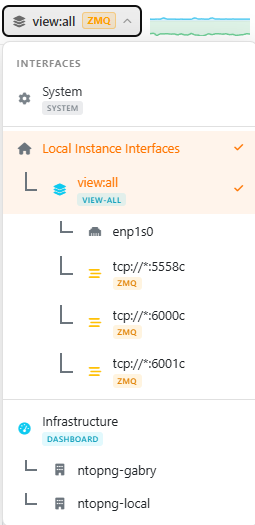

Network Interface
This Web Interface is used to monitor the status of a Network Interface; there can be different types of network interfaces, see this section for more info.

The Interfaces Dropdown Menu
By changing interface and jumping to the Network Interface some options are going to be available.
Dashboard
Monitoring
Alerts
Flows
- Flows
- Historical
- Details
- Track Flows
- Enabling Flow Dump
- Custom Queries
- Exporting Flows
- Data Retention
- Hourly Historical Flows
- Aggregation Preferences
- Replay Historical Flows
- Historical Flows Archive for Compliance
- Benefits
- Enabling Flow Export
- Default Export Location
- Custom Export Directory
- Importing Archived Flow Data
- Viewing Imported Data in ntopng
- Important Notes
- Server Ports